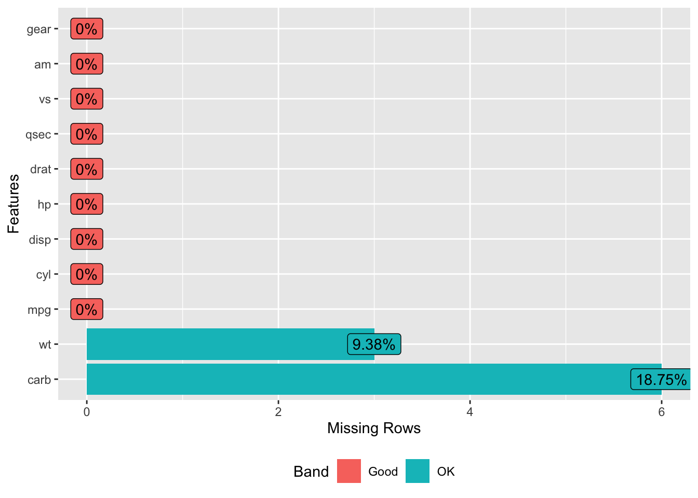
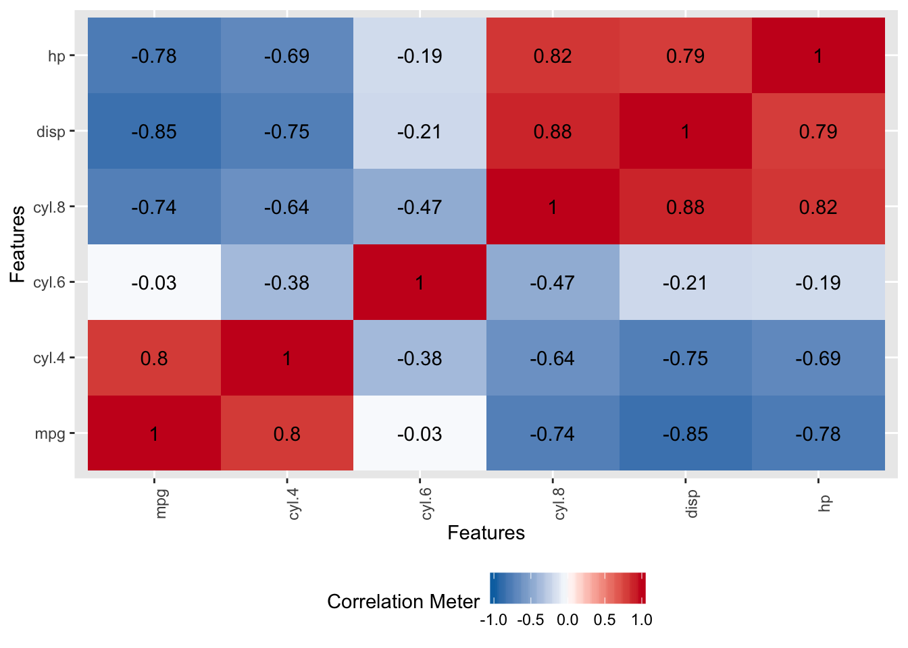
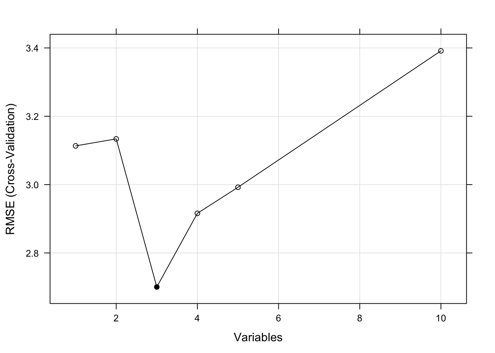

Chapter 11 Data Pre Processing
Data rarely arrives in a form that is directly suitable for use with a modeling method. There are a number of considerations to make such as how to handle missing data, highly correlated variables, and class imbalances - some categories are over or under represented. Additionally, some variables, also known as “features”, will require transformation or will need to be used to create new variables.
11.1 Types of Pre Processing
Consider the case where the measured data (the numeric data) might be on different scales (e.g. height vs weight). This might result in the need to scale and center the data. Some methods take this into consideration whereas others do not. Suffice it to say that data prep can be an ongoing process that requires a number of experiments before arriving at the best form of data.
11.2 Missing Values
This is a frequent situation in real life. Think of patients checking in for clinic visits over time. Sometimes they come for their appointments, sometimes they don’t. Sometimes when they do come, their information has changed or some diagnostic test is repeated with a new result which is entered or not. Or, whomever maintains the patient database, decides to add in some new variables to measure for all patients moving forward. This means that all existing patients will have missing values for those new variables. To see how this manifests practically in predictive learning consider the following version of the mtcars data frame which has some missing values:
library(readr)
url <- "https://raw.githubusercontent.com/steviep42/utilities/master/data/mtcars_na.csv"
mtcars_na <- read.csv(url, stringsAsFactors = FALSE)11.2.1 Finding Rows with Missing Data
Ar first glance it looks like all features have valid variable values but we can look for missing values which, in R, are indicated by NA Base R provides a number of commands to do this. First let’s see how many rows there are in the data frame.
## [1] 32Now let’s see how many rows have at least one column with a missing value. So we have eight rows in the data frame that contain one or more missing values.
## [1] 2411.2.2 Finding Columns With Missing Data
What columns have missing values ? Here we leverage the use of the apply family of functions along with the ability to create anonymous functions on the fly. Both R and Python provide this capability. We see that the wt column has three missing values and the carb feature has six missing values.
## mpg cyl disp hp drat wt qsec vs am gear carb
## 0 0 0 0 0 3 0 0 0 0 6If we actually wanted to see all rows with missing values:
## mpg cyl disp hp drat wt qsec vs am gear carb
## 2 21.0 6 160.0 110 3.90 NA 17.02 0 1 4 4
## 9 22.8 4 140.8 95 3.92 NA 22.90 1 0 4 2
## 10 19.2 6 167.6 123 3.92 3.440 18.30 1 0 4 NA
## 12 16.4 8 275.8 180 3.07 4.070 17.40 0 0 3 NA
## 19 30.4 4 75.7 52 4.93 1.615 18.52 1 1 4 NA
## 20 33.9 4 71.1 65 4.22 1.835 19.90 1 1 4 NA
## 23 15.2 8 304.0 150 3.15 NA 17.30 0 0 3 NA
## 28 30.4 4 95.1 113 3.77 1.513 16.90 1 1 5 NAWe might also consider using the DataExplorer package to help us identify the “missingness” of the data:

What do we do with these ? It depends on a number of things. How hard is it to get this type of data ? If it’s rare information then we probably want to keep as much of the data as possible. In fact, if most of the data in a given row is present maybe one strategy is to tell whatever modeling method we use to ignore the missing values (na.rm = TRUE). Some methods might do this by default without you even asking.
However, if we have plenty of data we could just filter out any row from the data frame that contains any missing values. In this case we would lose eight rows of data. This is low stakes data but if this were rare or hard to obtain information then we wouldn’t want to do this.
## [1] 2411.2.3 Use the Median Approach
What could we do ? Well we could keep all rows even if they contains NAs and then use imputation methods to supply values for the missing information. There are R packages that do this but one quick way to do this without going that route is to replace the missing value in the wt column with the median value for the entire column.
Using median is appropriate when the missing values are of the “missing at random” variety. There might some bias in the data that introduces a “not at random” situation. We’ll look at that case momentarily. Let’s look at a boxplot of the wt feature.

To make the substitution would involve the following. First we need to find out which row numbers have missing values for the wt feature.
## [1] 2 9 23Use this information with the data frame bracket notation see the rows where the NAs occur for the wt feature
## mpg cyl disp hp drat wt qsec vs am gear carb
## 2 21.0 6 160.0 110 3.90 NA 17.02 0 1 4 4
## 9 22.8 4 140.8 95 3.92 NA 22.90 1 0 4 2
## 23 15.2 8 304.0 150 3.15 NA 17.30 0 0 3 NANow do the replacement
Verify that the replacement was done successfully. If so, then we should see the value of 3.44 in place of the previous NA values.
## mpg cyl disp hp drat wt qsec vs am gear carb
## 2 21.0 6 160.0 110 3.90 3.44 17.02 0 1 4 4
## 9 22.8 4 140.8 95 3.92 3.44 22.90 1 0 4 2
## 23 15.2 8 304.0 150 3.15 3.44 17.30 0 0 3 NA11.2.4 Package-based Approach
This seems like a lot of work and maybe it is if you aren’t up to date with your R skills although, conceptually, this is straightforward and simple. The Hmisc package provides an easy way to do this:
#library(Hmisc)
# Reload the version of mtcars with missing values
url <- "https://raw.githubusercontent.com/steviep42/utilities/master/data/mtcars_na.csv"
mtcars_na <- read.csv(url, strip.white = FALSE)The Hmisc package provides and impute function to do the work for us. Check it out. Notice how it finds the rows for which the wt feature is missing.
## 1 2 3 4 5 6 7 8 9 10
## 2.620 3.440* 2.320 3.215 3.440 3.460 3.570 3.190 3.440* 3.440
## 11 12 13 14 15 16 17 18 19 20
## 3.440 4.070 3.730 3.780 5.250 5.424 5.345 2.200 1.615 1.835
## 21 22 23 24 25 26 27 28 29 30
## 2.465 3.520 3.440* 3.840 3.845 1.935 2.140 1.513 3.170 2.770
## 31 32
## 3.570 2.780To do the replacement is straightforward.
11.2.5 Using caret
Another imputation approach is to use the K-Nearest Neighbors method to find observations that are similar to the ones that contain missing data. The missing values can then be filled using information from the most similar observations. We won’t go into that choosing rather to use the convenience offered by the caret package to help us.
So if we choose to use caret we can use the preProcess function to signal our intent to use imputation - in this case the K-Nearest Neighbors technique. KNN imputation is particularly useful for dealing with the “not at random” situation where there could be bias in the way missing values occur. This approach looks at similar observations to those containing missing values which means that it will attempt to fill in missing values as a function of a number of variables as opposed to just one.
One subtlety here is that caret requires us to use an alternative to the formula interface (e.g. mpg ~ .) approach when using the train function - at least the version of caret that I am currently using.
# Get a fresh copy of the mtcars_na data frame
mtcars_na <- read.csv(url,stringsAsFactors = FALSE)
# Set the seed for reproducibility
set.seed(123)
# Get the indices for a 70/30 split
train_idx <- createDataPartition(mtcars_na$mpg,
p=.70,
list = FALSE)
# Split into a test / train pair
train <- mtcars[ train_idx,]
test <- mtcars[-train_idx,]
# Note how we specify knnImpute. Another other option
# includes medianImpute
X <- train[,-1] # Use Every column EXCEPT mpg
Y <- train$mpg # This is what we want to predict
lmFit <- train(X,Y,
method = "lm",
metric = "RMSE",
preProcess = "knnImpute")## Warning in predict.lm(modelFit, newdata): prediction from a rank-deficient
## fit may be misleading
## Warning in predict.lm(modelFit, newdata): prediction from a rank-deficient
## fit may be misleading
## Warning in predict.lm(modelFit, newdata): prediction from a rank-deficient
## fit may be misleading
## Warning in predict.lm(modelFit, newdata): prediction from a rank-deficient
## fit may be misleading## Linear Regression
##
## 24 samples
## 10 predictors
##
## Pre-processing: nearest neighbor imputation (10), centered (10),
## scaled (10)
## Resampling: Bootstrapped (25 reps)
## Summary of sample sizes: 24, 24, 24, 24, 24, 24, ...
## Resampling results:
##
## RMSE Rsquared MAE
## 8.723271 0.3681689 6.47164
##
## Tuning parameter 'intercept' was held constant at a value of TRUE## [1] 3.9890211.3 Scaling
In terms of what methods benefit (or require) you to scale data prior to use, consider that any method that uses the idea of “distance” will require this. This helps address the situation wherein one the size and range of one feature might overshadow another. For example, look at the range of features in the mtcars dataframe. Not only are the variables on different scales (e.g. MPG vs Weight vs Horse Power), a feature such as displacement might over influence a distance calculation when compared to qsec.
## mpg cyl disp hp
## Min. :10.40 Min. :4.000 Min. : 71.1 Min. : 52.0
## 1st Qu.:15.43 1st Qu.:4.000 1st Qu.:120.8 1st Qu.: 96.5
## Median :19.20 Median :6.000 Median :196.3 Median :123.0
## Mean :20.09 Mean :6.188 Mean :230.7 Mean :146.7
## 3rd Qu.:22.80 3rd Qu.:8.000 3rd Qu.:326.0 3rd Qu.:180.0
## Max. :33.90 Max. :8.000 Max. :472.0 Max. :335.0
## drat wt qsec vs
## Min. :2.760 Min. :1.513 Min. :14.50 Min. :0.0000
## 1st Qu.:3.080 1st Qu.:2.581 1st Qu.:16.89 1st Qu.:0.0000
## Median :3.695 Median :3.325 Median :17.71 Median :0.0000
## Mean :3.597 Mean :3.217 Mean :17.85 Mean :0.4375
## 3rd Qu.:3.920 3rd Qu.:3.610 3rd Qu.:18.90 3rd Qu.:1.0000
## Max. :4.930 Max. :5.424 Max. :22.90 Max. :1.0000
## am gear carb
## Min. :0.0000 Min. :3.000 Min. :1.000
## 1st Qu.:0.0000 1st Qu.:3.000 1st Qu.:2.000
## Median :0.0000 Median :4.000 Median :2.000
## Mean :0.4062 Mean :3.688 Mean :2.812
## 3rd Qu.:1.0000 3rd Qu.:4.000 3rd Qu.:4.000
## Max. :1.0000 Max. :5.000 Max. :8.00011.3.1 Methods That Benefit From Scaling
The following approaches benefit from scaling:
Linear/non-linear regression, logistic regression, KNN, SVM, Neural Networks, clustering algorithms like k-means clustering. Methods that employ PCA and dimensionality reduction should use scaled data.
In R and Python, some of the individual functions might have arguments to activate the scaling as part of the process.
11.3.2 Methods That Do Not Require Scaling
Methods that don’t require scaling (or whose results don’t rely upon it) include rule-based algorithms such as Decision trees and more generally CART - Random Forests, Gradient Boosted Decision Even if you scale the data the relative relationships will be preserved post scaling so the decision to split a tree won’t be impacted.
11.3.3 How To Scale
You could do your own scaling and centering which might be helpful to understand what is going on. First, when we say “scaling” we typically mean “centering” and “scaling”.
11.3.3.1 Centering
Take a vector (or column) of numeric data and find the mean. Then subtract the computed mean value from each element of the vector / column. We will use the wt column from mtcars as an example.
## [1] -0.59725 -0.34225 -0.89725 -0.00225 0.22275 0.24275 0.35275
## [8] -0.02725 -0.06725 0.22275 0.22275 0.85275 0.51275 0.56275
## [15] 2.03275 2.20675 2.12775 -1.01725 -1.60225 -1.38225 -0.75225
## [22] 0.30275 0.21775 0.62275 0.62775 -1.28225 -1.07725 -1.70425
## [29] -0.04725 -0.44725 0.35275 -0.4372511.3.3.2 Scaling
This step involves taking the standard deviation of the vector / column. Then divide each value in the vector / column by this computed standard deviation. We’ll process the centered data from the previous computation.
## [1] -0.610399567 -0.349785269 -0.917004624 -0.002299538 0.227654255
## [6] 0.248094592 0.360516446 -0.027849959 -0.068730634 0.227654255
## [11] 0.227654255 0.871524874 0.524039143 0.575139986 2.077504765
## [16] 2.255335698 2.174596366 -1.039646647 -1.637526508 -1.412682800
## [21] -0.768812180 0.309415603 0.222544170 0.636460997 0.641571082
## [26] -1.310481114 -1.100967659 -1.741772228 -0.048290296 -0.457097039
## [31] 0.360516446 -0.44687687011.3.3.3 Scaling a Data frame
We could continue to do this by hand
centered <- apply(mtcars,2,function(x) (x - mean(x)))
scaled <- apply(centered,2,function(x) x/sd(x))However, there is a function in R called scale which will do this for us. It has the added benefit of providing some attributes in the output that we could later use to de-scale the scaled data. This is useful if we build a model with scaled data because the predictions will be in terms of the scaled data which might not make sense to a third party. So you would then need to scale the predictions back into the units of the original data.
Here is how the scale function works:
## mpg cyl disp hp
## Mazda RX4 0.15088482 -0.1049878 -0.57061982 -0.53509284
## Mazda RX4 Wag 0.15088482 -0.1049878 -0.57061982 -0.53509284
## Datsun 710 0.44954345 -1.2248578 -0.99018209 -0.78304046
## Hornet 4 Drive 0.21725341 -0.1049878 0.22009369 -0.53509284
## Hornet Sportabout -0.23073453 1.0148821 1.04308123 0.41294217
## Valiant -0.33028740 -0.1049878 -0.04616698 -0.60801861
## Duster 360 -0.96078893 1.0148821 1.04308123 1.43390296
## Merc 240D 0.71501778 -1.2248578 -0.67793094 -1.23518023
## Merc 230 0.44954345 -1.2248578 -0.72553512 -0.75387015
## Merc 280 -0.14777380 -0.1049878 -0.50929918 -0.34548584
## Merc 280C -0.38006384 -0.1049878 -0.50929918 -0.34548584
## Merc 450SE -0.61235388 1.0148821 0.36371309 0.48586794
## Merc 450SL -0.46302456 1.0148821 0.36371309 0.48586794
## Merc 450SLC -0.81145962 1.0148821 0.36371309 0.48586794
## Cadillac Fleetwood -1.60788262 1.0148821 1.94675381 0.85049680
## Lincoln Continental -1.60788262 1.0148821 1.84993175 0.99634834
## Chrysler Imperial -0.89442035 1.0148821 1.68856165 1.21512565
## Fiat 128 2.04238943 -1.2248578 -1.22658929 -1.17683962
## Honda Civic 1.71054652 -1.2248578 -1.25079481 -1.38103178
## Toyota Corolla 2.29127162 -1.2248578 -1.28790993 -1.19142477
## Toyota Corona 0.23384555 -1.2248578 -0.89255318 -0.72469984
## Dodge Challenger -0.76168319 1.0148821 0.70420401 0.04831332
## AMC Javelin -0.81145962 1.0148821 0.59124494 0.04831332
## Camaro Z28 -1.12671039 1.0148821 0.96239618 1.43390296
## Pontiac Firebird -0.14777380 1.0148821 1.36582144 0.41294217
## Fiat X1-9 1.19619000 -1.2248578 -1.22416874 -1.17683962
## Porsche 914-2 0.98049211 -1.2248578 -0.89093948 -0.81221077
## Lotus Europa 1.71054652 -1.2248578 -1.09426581 -0.49133738
## Ford Pantera L -0.71190675 1.0148821 0.97046468 1.71102089
## Ferrari Dino -0.06481307 -0.1049878 -0.69164740 0.41294217
## Maserati Bora -0.84464392 1.0148821 0.56703942 2.74656682
## Volvo 142E 0.21725341 -1.2248578 -0.88529152 -0.54967799
## drat wt qsec vs
## Mazda RX4 0.56751369 -0.610399567 -0.77716515 -0.8680278
## Mazda RX4 Wag 0.56751369 -0.349785269 -0.46378082 -0.8680278
## Datsun 710 0.47399959 -0.917004624 0.42600682 1.1160357
## Hornet 4 Drive -0.96611753 -0.002299538 0.89048716 1.1160357
## Hornet Sportabout -0.83519779 0.227654255 -0.46378082 -0.8680278
## Valiant -1.56460776 0.248094592 1.32698675 1.1160357
## Duster 360 -0.72298087 0.360516446 -1.12412636 -0.8680278
## Merc 240D 0.17475447 -0.027849959 1.20387148 1.1160357
## Merc 230 0.60491932 -0.068730634 2.82675459 1.1160357
## Merc 280 0.60491932 0.227654255 0.25252621 1.1160357
## Merc 280C 0.60491932 0.227654255 0.58829513 1.1160357
## Merc 450SE -0.98482035 0.871524874 -0.25112717 -0.8680278
## Merc 450SL -0.98482035 0.524039143 -0.13920420 -0.8680278
## Merc 450SLC -0.98482035 0.575139986 0.08464175 -0.8680278
## Cadillac Fleetwood -1.24665983 2.077504765 0.07344945 -0.8680278
## Lincoln Continental -1.11574009 2.255335698 -0.01608893 -0.8680278
## Chrysler Imperial -0.68557523 2.174596366 -0.23993487 -0.8680278
## Fiat 128 0.90416444 -1.039646647 0.90727560 1.1160357
## Honda Civic 2.49390411 -1.637526508 0.37564148 1.1160357
## Toyota Corolla 1.16600392 -1.412682800 1.14790999 1.1160357
## Toyota Corona 0.19345729 -0.768812180 1.20946763 1.1160357
## Dodge Challenger -1.56460776 0.309415603 -0.54772305 -0.8680278
## AMC Javelin -0.83519779 0.222544170 -0.30708866 -0.8680278
## Camaro Z28 0.24956575 0.636460997 -1.36476075 -0.8680278
## Pontiac Firebird -0.96611753 0.641571082 -0.44699237 -0.8680278
## Fiat X1-9 0.90416444 -1.310481114 0.58829513 1.1160357
## Porsche 914-2 1.55876313 -1.100967659 -0.64285758 -0.8680278
## Lotus Europa 0.32437703 -1.741772228 -0.53093460 1.1160357
## Ford Pantera L 1.16600392 -0.048290296 -1.87401028 -0.8680278
## Ferrari Dino 0.04383473 -0.457097039 -1.31439542 -0.8680278
## Maserati Bora -0.10578782 0.360516446 -1.81804880 -0.8680278
## Volvo 142E 0.96027290 -0.446876870 0.42041067 1.1160357
## am gear carb
## Mazda RX4 1.1899014 0.4235542 0.7352031
## Mazda RX4 Wag 1.1899014 0.4235542 0.7352031
## Datsun 710 1.1899014 0.4235542 -1.1221521
## Hornet 4 Drive -0.8141431 -0.9318192 -1.1221521
## Hornet Sportabout -0.8141431 -0.9318192 -0.5030337
## Valiant -0.8141431 -0.9318192 -1.1221521
## Duster 360 -0.8141431 -0.9318192 0.7352031
## Merc 240D -0.8141431 0.4235542 -0.5030337
## Merc 230 -0.8141431 0.4235542 -0.5030337
## Merc 280 -0.8141431 0.4235542 0.7352031
## Merc 280C -0.8141431 0.4235542 0.7352031
## Merc 450SE -0.8141431 -0.9318192 0.1160847
## Merc 450SL -0.8141431 -0.9318192 0.1160847
## Merc 450SLC -0.8141431 -0.9318192 0.1160847
## Cadillac Fleetwood -0.8141431 -0.9318192 0.7352031
## Lincoln Continental -0.8141431 -0.9318192 0.7352031
## Chrysler Imperial -0.8141431 -0.9318192 0.7352031
## Fiat 128 1.1899014 0.4235542 -1.1221521
## Honda Civic 1.1899014 0.4235542 -0.5030337
## Toyota Corolla 1.1899014 0.4235542 -1.1221521
## Toyota Corona -0.8141431 -0.9318192 -1.1221521
## Dodge Challenger -0.8141431 -0.9318192 -0.5030337
## AMC Javelin -0.8141431 -0.9318192 -0.5030337
## Camaro Z28 -0.8141431 -0.9318192 0.7352031
## Pontiac Firebird -0.8141431 -0.9318192 -0.5030337
## Fiat X1-9 1.1899014 0.4235542 -1.1221521
## Porsche 914-2 1.1899014 1.7789276 -0.5030337
## Lotus Europa 1.1899014 1.7789276 -0.5030337
## Ford Pantera L 1.1899014 1.7789276 0.7352031
## Ferrari Dino 1.1899014 1.7789276 1.9734398
## Maserati Bora 1.1899014 1.7789276 3.2116766
## Volvo 142E 1.1899014 0.4235542 -0.5030337
## attr(,"scaled:center")
## mpg cyl disp hp drat wt
## 20.090625 6.187500 230.721875 146.687500 3.596563 3.217250
## qsec vs am gear carb
## 17.848750 0.437500 0.406250 3.687500 2.812500
## attr(,"scaled:scale")
## mpg cyl disp hp drat wt
## 6.0269481 1.7859216 123.9386938 68.5628685 0.5346787 0.9784574
## qsec vs am gear carb
## 1.7869432 0.5040161 0.4989909 0.7378041 1.6152000The last rows make reference to attributes which can be considered as “meta information”. The presence of this information does not prevent you from using the scaled data for other operations. But if you needed to de-scaled the data you would need the standard deviation for each column and the mean of each column to reverse the centering and scaling process. That info is stashed in the attributes:
## mpg cyl disp hp drat wt
## 6.0269481 1.7859216 123.9386938 68.5628685 0.5346787 0.9784574
## qsec vs am gear carb
## 1.7869432 0.5040161 0.4989909 0.7378041 1.6152000## mpg cyl disp hp drat wt
## 20.090625 6.187500 230.721875 146.687500 3.596563 3.217250
## qsec vs am gear carb
## 17.848750 0.437500 0.406250 3.687500 2.812500If we wanted to de-scaled the data frame that we just scaled we could something like this:
unscaledmt <- sweep(smtcars,2,
attr(smtcars,"scaled:scale"),"*")
uncentermt <- sweep(unscaledmt,2,
attr(smtcars,"scaled:center"),"+")
# Compare them
uncentermt[1:3,]## mpg cyl disp hp drat wt qsec vs am gear carb
## Mazda RX4 21.0 6 160 110 3.90 2.620 16.46 0 1 4 4
## Mazda RX4 Wag 21.0 6 160 110 3.90 2.875 17.02 0 1 4 4
## Datsun 710 22.8 4 108 93 3.85 2.320 18.61 1 1 4 1## mpg cyl disp hp drat wt qsec vs am gear carb
## Mazda RX4 21.0 6 160 110 3.90 2.620 16.46 0 1 4 4
## Mazda RX4 Wag 21.0 6 160 110 3.90 2.875 17.02 0 1 4 4
## Datsun 710 22.8 4 108 93 3.85 2.320 18.61 1 1 4 1Ugh. What a pain ! But, if we wanted to use the scaled data to build a model, here is what we would do:
smtcars <- scale(mtcars)
mtcars_center_scaled <- data.frame(smtcars)
myLm <- lm(mpg~.,
data = mtcars_center_scaled)
# Do some predicting.
preds <- predict(myLm,mtcars_center_scaled)
# The results are scaled. How to get them back to unscaled
preds[1:5]## Mazda RX4 Mazda RX4 Wag Datsun 710 Hornet 4 Drive
## 0.4162772 0.3353706 1.0220793 0.1902753
## Hornet Sportabout
## -0.3977454So how would we re express this information in terms of the unscaled data ? It’s tedious but doable. We leverage the fact that the scaled version of the data has attributes we can use to convert the predictions back to their unscaled form.
(unscaled_preds <-
preds * attr(smtcars,"scaled:scale")['mpg'] + attr(smtcars,"scaled:center")['mpg'])## Mazda RX4 Mazda RX4 Wag Datsun 710
## 22.59951 22.11189 26.25064
## Hornet 4 Drive Hornet Sportabout Valiant
## 21.23740 17.69343 20.38304
## Duster 360 Merc 240D Merc 230
## 14.38626 22.49601 24.41909
## Merc 280 Merc 280C Merc 450SE
## 18.69903 19.19165 14.17216
## Merc 450SL Merc 450SLC Cadillac Fleetwood
## 15.59957 15.74222 12.03401
## Lincoln Continental Chrysler Imperial Fiat 128
## 10.93644 10.49363 27.77291
## Honda Civic Toyota Corolla Toyota Corona
## 29.89674 29.51237 23.64310
## Dodge Challenger AMC Javelin Camaro Z28
## 16.94305 17.73218 13.30602
## Pontiac Firebird Fiat X1-9 Porsche 914-2
## 16.69168 28.29347 26.15295
## Lotus Europa Ford Pantera L Ferrari Dino
## 27.63627 18.87004 19.69383
## Maserati Bora Volvo 142E
## 13.94112 24.36827Does this match what we would get had we not scaled the data in the first place ?
## Mazda RX4 Mazda RX4 Wag Datsun 710
## 22.59951 22.11189 26.25064
## Hornet 4 Drive Hornet Sportabout Valiant
## 21.23740 17.69343 20.38304
## Duster 360 Merc 240D Merc 230
## 14.38626 22.49601 24.41909
## Merc 280 Merc 280C Merc 450SE
## 18.69903 19.19165 14.17216
## Merc 450SL Merc 450SLC Cadillac Fleetwood
## 15.59957 15.74222 12.03401
## Lincoln Continental Chrysler Imperial Fiat 128
## 10.93644 10.49363 27.77291
## Honda Civic Toyota Corolla Toyota Corona
## 29.89674 29.51237 23.64310
## Dodge Challenger AMC Javelin Camaro Z28
## 16.94305 17.73218 13.30602
## Pontiac Firebird Fiat X1-9 Porsche 914-2
## 16.69168 28.29347 26.15295
## Lotus Europa Ford Pantera L Ferrari Dino
## 27.63627 18.87004 19.69383
## Maserati Bora Volvo 142E
## 13.94112 24.36827## [1] TRUE11.3.3.4 caret and preprocess
But the caret package will help you do this using the preProcess function. Here we can actually request that the data is “centered” and “scaled” as part of the model assembly process. We could do this before the call to the Train function but then we would also have to convert the training and test data ourselves. In the following situation, the data will be centered and scaled though the returned RMSE will be in terms of the unscaled data.
training_idx <- createDataPartition(mtcars$mpg,
p =.80, list=FALSE)
training <- mtcars[training_idx,]
test <- mtcars[-training_idx,]
myLm <- train(mpg ~ .,
data = training,
method = "lm",
preProcess = c("center","scale")
)## Warning in predict.lm(modelFit, newdata): prediction from a rank-deficient
## fit may be misleadingTo verify that the data is being centered and scaled within the call the train function, checkout the myLm object:
## .outcome cyl disp hp drat
## Mazda.RX4 21.0 -0.1169061 -0.5638891 -0.5495661 0.5813586
## Datsun.710 22.8 -1.2080299 -0.9832489 -0.7922316 0.4848103
## Hornet.4.Drive 21.4 -0.1169061 0.2264428 -0.5495661 -1.0020333
## Hornet.Sportabout 18.7 0.9742177 1.0490331 0.3782728 -0.8668657
## Duster.360 14.3 0.9742177 1.0490331 1.3774838 -0.7510078
## wt qsec vs am gear
## Mazda.RX4 -0.60017925 -0.7564127 -0.9141741 1.2207620 0.4446792
## Datsun.710 -0.91982835 0.4135782 1.0548163 1.2207620 0.4446792
## Hornet.4.Drive 0.03379148 0.8652490 1.0548163 -0.7899048 -0.9387672
## Hornet.Sportabout 0.27352831 -0.4516709 -0.9141741 -0.7899048 -0.9387672
## Duster.360 0.41204292 -1.0938054 -0.9141741 -0.7899048 -0.9387672
## carb
## Mazda.RX4 0.7113900
## Datsun.710 -1.0994209
## Hornet.4.Drive -1.0994209
## Hornet.Sportabout -0.4958173
## Duster.360 0.7113900## mpg cyl disp hp drat
## Mazda RX4 0.1421120 -0.1169061 -0.5638891 -0.5495661 0.5813586
## Datsun 710 0.4297605 -1.2080299 -0.9832489 -0.7922316 0.4848103
## Hornet 4 Drive 0.2060339 -0.1169061 0.2264428 -0.5495661 -1.0020333
## Hornet Sportabout -0.2254388 0.9742177 1.0490331 0.3782728 -0.8668657
## Duster 360 -0.9285795 0.9742177 1.0490331 1.3774838 -0.7510078
## wt qsec vs am gear
## Mazda RX4 -0.60017925 -0.7564127 -0.9141741 1.2207620 0.4446792
## Datsun 710 -0.91982835 0.4135782 1.0548163 1.2207620 0.4446792
## Hornet 4 Drive 0.03379148 0.8652490 1.0548163 -0.7899048 -0.9387672
## Hornet Sportabout 0.27352831 -0.4516709 -0.9141741 -0.7899048 -0.9387672
## Duster 360 0.41204292 -1.0938054 -0.9141741 -0.7899048 -0.9387672
## carb
## Mazda RX4 0.7113900
## Datsun 710 -1.0994209
## Hornet 4 Drive -1.0994209
## Hornet Sportabout -0.4958173
## Duster 360 0.7113900This is convenient because if we now wish to use the predict function, it will scale the test data that we provide for use with the predict function. What we get back will be in terms of the uncenter and unscaled predicted variable (mpg). We do not have to suffer through the conversion reverse scaling process ourselves.
## Mazda RX4 Wag Valiant Chrysler Imperial Porsche 914-2
## 22.125590 21.707846 8.500784 24.21584911.3.4 Order of Processing
Note that the order of processing is important. You should center and then scale. Underneath the hood, the centering operation finds the mean of a feature (column) and then subtracts it from each value therein. So the following are equivalent:
## [1] -0.59725 -0.34225 -0.89725 -0.00225 0.22275 0.24275 0.35275
## [8] -0.02725 -0.06725 0.22275 0.22275 0.85275 0.51275 0.56275
## [15] 2.03275 2.20675 2.12775 -1.01725 -1.60225 -1.38225 -0.75225
## [22] 0.30275 0.21775 0.62275 0.62775 -1.28225 -1.07725 -1.70425
## [29] -0.04725 -0.44725 0.35275 -0.43725## [1] -0.59725 -0.34225 -0.89725 -0.00225 0.22275 0.24275 0.35275
## [8] -0.02725 -0.06725 0.22275 0.22275 0.85275 0.51275 0.56275
## [15] 2.03275 2.20675 2.12775 -1.01725 -1.60225 -1.38225 -0.75225
## [22] 0.30275 0.21775 0.62275 0.62775 -1.28225 -1.07725 -1.70425
## [29] -0.04725 -0.44725 0.35275 -0.43725After centering, the scaling is done by dividing the (centered) columns of the data frame by their respective standard deviations. In terms of dealing with missing data and scaling, one should first do imputation followed by centering and scaling. In a call to the train function, this would look like the following. We’ll use our version of mtcars that has missing data.
url <- "https://raw.githubusercontent.com/steviep42/utilities/master/data/mtcars_na.csv"
mtcars_na <- read.csv(url,stringsAsFactors = FALSE)training_idx <- createDataPartition(mtcars_na$mpg, p =.80, list=FALSE)
training <- mtcars_na[training_idx,]
test <- mtcars_na[-training_idx,]
X <- training[,-1]
Y <- training$mpg
myLm <- train(X, Y,
method = "lm",
preProcess = c("knnImpute","center","scale")
)## Warning in predict.lm(modelFit, newdata): prediction from a rank-deficient
## fit may be misleading
## Warning in predict.lm(modelFit, newdata): prediction from a rank-deficient
## fit may be misleading11.4 Low Variance Variables
Some variables exhibit low variance and might be nearly constant. Such variables can be detected by using some basic functions in R before you begin to build a model. As an example, we’ll use the mtcars data frame and introduce a low variance variable - actually, we’ll make it a constant.
data(mtcars)
set.seed(123)
mtcars_nzv <- mtcars
# Make drat low variance
mtcars_nzv$drat <- 3.0
# Pretty low isn't it ?
var(mtcars_nzv$drat)## [1] 0What if we use this variable when making a model. We’ll get a lot of problems. While this is a contrived example, it is possible to get this situation when using cross fold validation where the data is segmented into smaller subsets where a variable can be zero variance.
x <- mtcars_nzv[,-1]
y <- mtcars_nzv[,1]
lowVarLm <- train(
x,y,
method="lm",
preProcess=c("center","scale"))The caret package has an option to the preProcess argument that allows us to remove such variables so it won’t impact the resulting model. Notice that we remove the near zero variance variables before we center which happens before scaling. This is the recommended order.
x <- mtcars_nzv[,-1]
y <- mtcars_nzv[,1]
lowVarLm <- train(
x,y,
method="lm",
preProcess=c("nzv","center","scale"))The above now works. There is a subtle consideration at work here. We could pre process the data with nzv or zv where the former removes “near” zero variance features and the latter removes constant-valued features. With near zero variance features there is a way to specify tolerance for deciding whether a feature has near zero variance.
Think of nzv as being slightly more permissive and flexible whereas zv eliminates zero variance variables. Sometimes you might want to keep near zero variance features around simply because there could be some interesting information therein.
In general we could remove the constant or near zero variance features before passing the data to the train function. Caret has a standalone function called nearZeroVariance to do this. We’ll it doesn’t actually remove the feature but it will tell us which column(s) exhibit very low variance or have a constant value. In this case it is column number 5 which corresponds to drat. We already knew that.
## [1] 5## drat
## Mazda RX4 3
## Mazda RX4 Wag 3
## Datsun 710 3
## Hornet 4 Drive 3
## Hornet Sportabout 3
## Valiant 3
## Duster 360 3
## Merc 240D 3
## Merc 230 3
## Merc 280 3
## Merc 280C 3
## Merc 450SE 3
## Merc 450SL 3
## Merc 450SLC 3
## Cadillac Fleetwood 3
## Lincoln Continental 3
## Chrysler Imperial 3
## Fiat 128 3
## Honda Civic 3
## Toyota Corolla 3
## Toyota Corona 3
## Dodge Challenger 3
## AMC Javelin 3
## Camaro Z28 3
## Pontiac Firebird 3
## Fiat X1-9 3
## Porsche 914-2 3
## Lotus Europa 3
## Ford Pantera L 3
## Ferrari Dino 3
## Maserati Bora 3
## Volvo 142E 3There is a data frame in the caret package which exhibits this behavior in a more organic fashion - that is the data measurements of a number of features are near zero variance.
## 'data.frame': 208 obs. of 134 variables:## [1] 3 16 17 22 25 50 60## [1] "negative" "peoe_vsa.2.1" "peoe_vsa.3.1" "a_acid"
## [5] "vsa_acid" "frac.anion7." "alert"11.5 PCA - Principal Components Analysis
So one of the problems with data can be what is called multicollinearity where high correlations exist between variables in a data set. Consider the mtcars data frame for example. Let’s assume that we want to predict whether a given car has an automatic transmission (0) or manual (1). We’ll remove other columns from the data frame that represent categorical data so we can focus on the continuous numeric variables.
11.5.1 Identify The Factors
## mpg cyl disp hp drat wt qsec vs am gear carb
## 25 3 27 22 22 29 30 2 2 3 6Let’s eliminate cyl,vs,gear, and carb. We’ll also remove the rownames since, if we don’t, then they will cause problems when we create the biplot of the principal components.
Now, let’s look at the correlation matrix to see if we have highly correlated variables. We do have several correlations that exceed .7 which is sufficiently high to consider that they might cause problems when building models. The caret package has a findCorrelation function that can remove predictors that exhibit a correlation above a certain threshold but we’ll see how PCA can help - so we’ll leave them in for now.
11.5.2 Check For High Correlations
# Get correlations just for the predictor variables
DataExplorer::plot_correlation(mtcars_data[,-7])
This is a graphic equivalent of this command:
## mpg disp hp drat wt qsec
## mpg 1.0000000 -0.8475514 -0.7761684 0.68117191 -0.8676594 0.41868403
## disp -0.8475514 1.0000000 0.7909486 -0.71021393 0.8879799 -0.43369788
## hp -0.7761684 0.7909486 1.0000000 -0.44875912 0.6587479 -0.70822339
## drat 0.6811719 -0.7102139 -0.4487591 1.00000000 -0.7124406 0.09120476
## wt -0.8676594 0.8879799 0.6587479 -0.71244065 1.0000000 -0.17471588
## qsec 0.4186840 -0.4336979 -0.7082234 0.09120476 -0.1747159 1.0000000011.5.3 So Why Use PCA ?
There are several functions for doing Principal Components Analysis on this data. But why are we even thinking about PCA ? Well, it helps us deal with highly correlated data by reducing the dimensionality of a data set. In the mtcars data frame we don’t have that many variables / columns but wouldn’t it be nice to transform the data in a way that reduced the number of columns that we had to consider while also dealing with the multicollinearity ?
This is what PCA can do for us. In reality we are using the eigenvectors of the covariance matrix of the original data. We use them to transform the original data into a reduced number of columns to consider. To get the ball rolling, we’ll use the prcomp function.
## Call:
## princomp(x = scaled_mtcars_data)
##
## Standard deviations:
## Comp.1 Comp.2 Comp.3 Comp.4 Comp.5 Comp.6
## 2.0140855 1.0546249 0.5682775 0.3866999 0.3477012 0.2243967
##
## 6 variables and 32 observations.## Importance of components:
## Comp.1 Comp.2 Comp.3 Comp.4
## Standard deviation 2.0140855 1.0546249 0.56827746 0.38669985
## Proportion of Variance 0.6978994 0.1913520 0.05555944 0.02572676
## Cumulative Proportion 0.6978994 0.8892514 0.94481088 0.97053763
## Comp.5 Comp.6
## Standard deviation 0.34770121 0.224396671
## Proportion of Variance 0.02079933 0.008663031
## Cumulative Proportion 0.99133697 1.00000000011.5.4 Check The BiPlot
What we get from this summary is that PC1 accounts for roughly 70% of the variation in the data set. By the time we get to PC3, about 95% of the variation is accounted. We can also look at something called a biplot that allows us to see what variables in the first two components are influential. This information is also available just by viewing the default return information from the object itself but the biplot makes it easier to see.

Back to the summary information, we cal use something called a screeplot which will help us see how many of the components to use. We don’t actually need the plot although it can help. Look at the plot and find the “elbow” which is the point at which the rate of change stabilizes. In the plot below it looks like the elbow is at PC3. In looking at the summary info, if we select three components then we are accounting for about 95% of the variation in the data. IF we selected two components then we would have about 89% of the variation accounted for.
## Importance of components:
## Comp.1 Comp.2 Comp.3 Comp.4
## Standard deviation 2.0140855 1.0546249 0.56827746 0.38669985
## Proportion of Variance 0.6978994 0.1913520 0.05555944 0.02572676
## Cumulative Proportion 0.6978994 0.8892514 0.94481088 0.97053763
## Comp.5 Comp.6
## Standard deviation 0.34770121 0.224396671
## Proportion of Variance 0.02079933 0.008663031
## Cumulative Proportion 0.99133697 1.00000000011.5.5 Check The ScreePlot

Let’s pick two components. We’ll multiply our data set (using (matrix multiplication) by the two “loadings” / components that we picked. This will give us our original data in terms of the two principal components.
11.5.6 Use The Transformed Data
So now we’ll use the Naive Bayes method to do build a model using the transformed data.
mod2 <- e1071::naiveBayes(model2_scores,factor(mtcars_data$am))
(mod2t <- table(predict(mod2,model2_scores),mtcars_data$am))##
## 0 1
## 0 18 0
## 1 1 13## Accuracy for PCA mod: 0.96875Compare this to a model built using the untransformed data:
mod1 <- e1071::naiveBayes(mtcars_data[-7],factor(mtcars_data$am))
(mod1t <- table(predict(mod1,mtcars_data),mtcars_data$am))##
## 0 1
## 0 16 2
## 1 3 11## Accuracy for PCA mod: 0.8437511.5.7 PLS
Partial Least Squares regression is related to PCA although, in classification problems, the latter ignores the variable being predicted. PLS uses information from the variable to be predicted (the class labels) to help maximize the separation of the two classes. Of course, using pls as a method within caret is easy.
control <- trainControl(method="cv",number = 5)
#
caret_pls <- train(factor(am)~.,
mtcars,
method="pls",
preProcess=c("center","scale"),
trControl = control)We already knew that the mtcars data frame would benefit from PCA. Here we see that PLS uses the first three Principal Components to arrive at an accuracy of 0.97 on the data set.
11.5.8 Summary
So the advantages of PCA should be clear in this case. We have effectively replaced the original data by a smaller data set while also dealing with the correlation issues. We used only two components. Now, a disadvantage here is that the model with the transformed data is in terms of the components which means that the model is less transparent. Perhaps a minor price to pay for better accuracy. In terms of the caret package we can do this using the preProcess function:
control <- trainControl(method="cv",number = 5)
#
caret_nb <- train(factor(am)~.,
mtcars_data,
method="nb",
preProcess=c("center","scale","pca"),
trControl = control)##
## predicted 0 1
## 0 18 0
## 1 1 1311.6 Order of Pre-Processing
In reality, if we wanted to line up the order in which to pre process data it would read something like the following:
- Remove Near Zero Variance Features
- Do Imputation (knn or median)
- Center
- Scale
11.7 Handling Categories
If you haven’t already, you should first read the section on “Levels Of Measurement” to reacquaint yourself with the differences between Nominal, Ordinal, Interval, and Ratio data.
In this section we’ll deal with categories and factors which represent categories (e.g. “male”,“female”,“smoker”,“non-smoker”). These variables, while useful, need to be recoded in a way to make them useful for machine learning methods. In terms of categories, we have nominal and ordinal features with the former being names or labels and the latter being the same except with some notion of order (e.g. “low”,“medium”,“high”).
11.7.1 Examples
In R, you can usually create a factor out of a feature and R will handle it correctly when applying a machine learning method. Under the hood, it turns the factors into dummy variables. Notice how the model creates variables of the type cyl6 and cyl8. Where is cyl4 ? Well, absence of cyl4 is simply when cyl6 and cyl8 do not exist for that record.
##
## Call:
## lm(formula = mpg ~ ., data = mtcars_exampl)
##
## Coefficients:
## (Intercept) cyl6 cyl8 disp hp
## 17.81984 -1.66031 1.63744 0.01391 -0.04613
## drat wt qsec vs am
## 0.02635 -3.80625 0.64696 1.74739 2.61727
## gear carb
## 0.76403 0.50935We could have created the dummy variables ourselves but we didn’t need to do that here. In Python, we generally would. But when we do it’s best to have 1 less category than is encoded by the unique feature values under consideration. If there are n=3 unique values then we would want 2 dummy variables.
mtcars_exampl <- mtcars %>% mutate(cyl=factor(cyl))
dummy <- dummyVars(~.,mtcars_exampl)
dummied_up_mtcars <- data.frame(predict(dummy,newdata=mtcars_exampl))
head(dummied_up_mtcars)## mpg cyl.4 cyl.6 cyl.8 disp hp drat wt qsec vs am gear carb
## 1 21.0 0 1 0 160 110 3.90 2.620 16.46 0 1 4 4
## 2 21.0 0 1 0 160 110 3.90 2.875 17.02 0 1 4 4
## 3 22.8 1 0 0 108 93 3.85 2.320 18.61 1 1 4 1
## 4 21.4 0 1 0 258 110 3.08 3.215 19.44 1 0 3 1
## 5 18.7 0 0 1 360 175 3.15 3.440 17.02 0 0 3 2
## 6 18.1 0 1 0 225 105 2.76 3.460 20.22 1 0 3 1But here we would want to use the fullrank = TRUE in the call to dummyVars to accomplish the n-1 encoding. The reason we would do this is to avoid the collinearity although in this case that isn’t a problem here. We could first check the correlations

mtcars_exampl <- mtcars %>% mutate(cyl=factor(cyl))
dummy <- dummyVars(~.,mtcars_exampl,fullRank = T)
dummied_up_mtcars <- data.frame(predict(dummy,
newdata=mtcars_exampl))
head(dummied_up_mtcars)## mpg cyl.6 cyl.8 disp hp drat wt qsec vs am gear carb
## 1 21.0 1 0 160 110 3.90 2.620 16.46 0 1 4 4
## 2 21.0 1 0 160 110 3.90 2.875 17.02 0 1 4 4
## 3 22.8 0 0 108 93 3.85 2.320 18.61 1 1 4 1
## 4 21.4 1 0 258 110 3.08 3.215 19.44 1 0 3 1
## 5 18.7 0 1 360 175 3.15 3.440 17.02 0 0 3 2
## 6 18.1 1 0 225 105 2.76 3.460 20.22 1 0 3 1But again, R will do this for us just by indicating that it is a factor. But let me show you what will happen in another case with respect to the am variable if we do not use the n-1 encoding
mtcars_exampl <- mtcars %>% mutate(am=factor(am))
dummy <- dummyVars(~.,mtcars_exampl)
dummied_up_mtcars <- data.frame(predict(dummy,
newdata=mtcars_exampl))
head(dummied_up_mtcars[,7:11])## qsec vs am.0 am.1 gear
## 1 16.46 0 0 1 4
## 2 17.02 0 0 1 4
## 3 18.61 1 0 1 4
## 4 19.44 1 1 0 3
## 5 17.02 0 1 0 3
## 6 20.22 1 1 0 3Check the correlations between am.0 and am.1. They are perfectly correlated which could cause problems in the modeling methods. We could express am.0 as a linear function of am.1. This is why using the n-1 approach helps deal with the collinearity problem.

11.7.2 Admissions Data
For example, read in the following data which relates to admissions data for students applying to an academic program. This comes from UCLA Statisitical Consulting site.
## admit gre gpa rank
## 1 0 380 3.61 3
## 2 1 660 3.67 3
## 3 1 800 4.00 1
## 4 1 640 3.19 4
## 5 0 520 2.93 4
## 6 1 760 3.00 2## 'data.frame': 400 obs. of 4 variables:
## $ admit: int 0 1 1 1 0 1 1 0 1 0 ...
## $ gre : int 380 660 800 640 520 760 560 400 540 700 ...
## $ gpa : num 3.61 3.67 4 3.19 2.93 3 2.98 3.08 3.39 3.92 ...
## $ rank : int 3 3 1 4 4 2 1 2 3 2 ...Let’s examine this data by determining the number of unique values assumed by each feature. This helps us understand if a variable is a category / factor variable or a continuous quantity. It appears that admit takes on only two distinct values and rank assumes only four which suggests that both might be more of a category than a quantity upon which we could perform lots of calculations.
As it relates to admit, this is a yes / no assessment and there is no inherent order even though it has been encoded as a 0 or a 1. This might be something that we might predict with a model.
We will treat the variables gre and gpa as continuous. The variable rank takes on the values 1 through 4. Institutions with a rank of 1 have the highest prestige, while those with a rank of 4 have the lowest.
## admit gre gpa rank
## 1 2 26 132 4You can always use the summary function to get a quick overview of the data. Notice here that admit is more of a binary entity although since R thinks it is just a number it will compute the percentiles for it. Same with the rest of the variables. We probably don’t want this but let’s hold off on doing anything about it for now since most newcomers to Data Analysis will make this mistake. Let’s see what happens.
## admit gre gpa rank
## Min. :0.0000 Min. :220.0 Min. :2.260 Min. :1.000
## 1st Qu.:0.0000 1st Qu.:520.0 1st Qu.:3.130 1st Qu.:2.000
## Median :0.0000 Median :580.0 Median :3.395 Median :2.000
## Mean :0.3175 Mean :587.7 Mean :3.390 Mean :2.485
## 3rd Qu.:1.0000 3rd Qu.:660.0 3rd Qu.:3.670 3rd Qu.:3.000
## Max. :1.0000 Max. :800.0 Max. :4.000 Max. :4.000So with this data, an interesting problem might be to predict whether an applicant is admitted to the program based on the other variables in the data set. We could pick Logistic Regression for this activity.
control <- trainControl(method="cv",number=3)
try_to_classify_admit <- train(admit ~ .,
data = admissions,
method = "glm",
trControl = control)## Warning in train.default(x, y, weights = w, ...): You are trying to do
## regression and your outcome only has two possible values Are you trying to
## do classification? If so, use a 2 level factor as your outcome column.Why does this bomb out ? Well, the GLM method expects us to be predicting a binary outcome which, to the human eye, the admit variable actually is. However, R doesn’t know this as it currently thinks of the admit variable as being simply a number so it thinks we are trying to predict a numeric outcome hence the error. To fix this we need to make admit a factor which is a term used in statistics to refer to categories. So let’s see the effect of doing this. While we are at it, let’s also resummarize the data to see if R treats the admit variable any differently after the conversion to factor has been made.
## 'data.frame': 400 obs. of 4 variables:
## $ admit: Factor w/ 2 levels "0","1": 1 2 2 2 1 2 2 1 2 1 ...
## $ gre : int 380 660 800 640 520 760 560 400 540 700 ...
## $ gpa : num 3.61 3.67 4 3.19 2.93 3 2.98 3.08 3.39 3.92 ...
## $ rank : int 3 3 1 4 4 2 1 2 3 2 ...##
## Now look at the summary## 0 1
## 273 127So now R understands that admit is a category so it chooses to offer a table / count summary of the data as opposed to the summary statistics it would apply for numeric data. So now let’s try again to build a predictive model for admit.
classify_admit_factor_1 <- train(admit ~ .,
data = admissions_factor_1,
method = "glm",
trControl = control)
classify_admit_factor_1$results$Accuracy## [1] 0.7049714##
## Call:
## NULL
##
## Deviance Residuals:
## Min 1Q Median 3Q Max
## -1.5802 -0.8848 -0.6382 1.1575 2.1732
##
## Coefficients:
## Estimate Std. Error z value Pr(>|z|)
## (Intercept) -3.449548 1.132846 -3.045 0.00233 **
## gre 0.002294 0.001092 2.101 0.03564 *
## gpa 0.777014 0.327484 2.373 0.01766 *
## rank -0.560031 0.127137 -4.405 1.06e-05 ***
## ---
## Signif. codes: 0 '***' 0.001 '**' 0.01 '*' 0.05 '.' 0.1 ' ' 1
##
## (Dispersion parameter for binomial family taken to be 1)
##
## Null deviance: 499.98 on 399 degrees of freedom
## Residual deviance: 459.44 on 396 degrees of freedom
## AIC: 467.44
##
## Number of Fisher Scoring iterations: 411.7.3 Is Rank A Category ?
Okay that was nice and it appears that all of our predictors are significant with rank ,in particular, being so. However, when looking at the rank variable it looks like it is an ordinal variable as opposed to an interval variable. It’s interesting since rank is on an interval but is a rank of 0 significant ? This variable could be considered as an interval variable but it’s more likely that it is ordinal in which case we would need to turn it into a factor.
## 'data.frame': 400 obs. of 4 variables:
## $ admit: Factor w/ 2 levels "0","1": 1 2 2 2 1 2 2 1 2 1 ...
## $ gre : int 380 660 800 640 520 760 560 400 540 700 ...
## $ gpa : num 3.61 3.67 4 3.19 2.93 3 2.98 3.08 3.39 3.92 ...
## $ rank : Factor w/ 4 levels "1","2","3","4": 3 3 1 4 4 2 1 2 3 2 ...classify_admit_factor_2 <- train(admit ~ .,
data = admissions_factor_2,
method = "glm",
trControl = control)
classify_admit_factor_2$results$Accuracy## [1] 0.6899151##
## Call:
## NULL
##
## Deviance Residuals:
## Min 1Q Median 3Q Max
## -1.6268 -0.8662 -0.6388 1.1490 2.0790
##
## Coefficients:
## Estimate Std. Error z value Pr(>|z|)
## (Intercept) -3.989979 1.139951 -3.500 0.000465 ***
## gre 0.002264 0.001094 2.070 0.038465 *
## gpa 0.804038 0.331819 2.423 0.015388 *
## rank2 -0.675443 0.316490 -2.134 0.032829 *
## rank3 -1.340204 0.345306 -3.881 0.000104 ***
## rank4 -1.551464 0.417832 -3.713 0.000205 ***
## ---
## Signif. codes: 0 '***' 0.001 '**' 0.01 '*' 0.05 '.' 0.1 ' ' 1
##
## (Dispersion parameter for binomial family taken to be 1)
##
## Null deviance: 499.98 on 399 degrees of freedom
## Residual deviance: 458.52 on 394 degrees of freedom
## AIC: 470.52
##
## Number of Fisher Scoring iterations: 4This is interesting in that the Accuracy from this model is less than the previous one although we see that the interpretation of Rank is more nuanced here in that ranks of 3 and 4 appear to be more significant than other rank values. We might take this into consideration when thinking about how to transform the features or modify our prediction formula.
11.7.4 Relationship To One Hot Encoding
Usually when you indicate to R that a variable is a factor then most procedures and functions will know how to handle that when computing various statistics and building models. Other languages might not do this for you in which case you need to employ an approach called One Hot Encoding. We can do this also in R but in many (most) cases it is not necessary as long as you explicitly create factors as indicated above. It might be helpful to first see what a one hot encoded version of the admissions data frame might look:
gre gpa rank.1 rank.2 rank.3 rank.4
1 380 3.61 0 0 1 0
2 660 3.67 0 0 1 0
3 800 4.00 1 0 0 0
4 640 3.19 0 0 0 1
5 520 2.93 0 0 0 1
6 760 3.00 0 1 0 0There are two things to notice here. The first is that the admit variable isn’t present since that is the value we will be predicting. The second thing to notice is that for each “level” of the rank variable there is a corresponding column. Now, there is the concept of a “rank deficient” fit wherein you will generally want one less variable than the number of categories present to avoid perfect collinearity. In this case the above encoding would look like:
gre gpa rank.2 rank.3 rank.4
1 380 3.61 0 1 0
2 660 3.67 0 1 0
3 800 4.00 0 0 0
4 640 3.19 0 0 1
5 520 2.93 0 0 1
6 760 3.00 1 0 0So, in cases where all rank features (2,3 and 4) were 0 would correspond to a rank of 1. In any case, here is how we would handle the situation using the One Hot Encoding approach. First, we’ll read in the data again:
## admit gre gpa rank
## 1 0 380 3.61 3
## 2 1 660 3.67 3
## 3 1 800 4.00 1
## 4 1 640 3.19 4
## 5 0 520 2.93 4
## 6 1 760 3.00 2## 'data.frame': 400 obs. of 4 variables:
## $ admit: int 0 1 1 1 0 1 1 0 1 0 ...
## $ gre : int 380 660 800 640 520 760 560 400 540 700 ...
## $ gpa : num 3.61 3.67 4 3.19 2.93 3 2.98 3.08 3.39 3.92 ...
## $ rank : int 3 3 1 4 4 2 1 2 3 2 ...Now since we want to predict admissions and we consider rank as a factor we’ll turn those into factors. As mentioned, this is all that is necessary when using R but let’s pretend that it isn’t.
admissions_factors <- admissions %>% mutate(admit=factor(admit),
rank=factor(rank))
str(admissions_factors)## 'data.frame': 400 obs. of 4 variables:
## $ admit: Factor w/ 2 levels "0","1": 1 2 2 2 1 2 2 1 2 1 ...
## $ gre : int 380 660 800 640 520 760 560 400 540 700 ...
## $ gpa : num 3.61 3.67 4 3.19 2.93 3 2.98 3.08 3.39 3.92 ...
## $ rank : Factor w/ 4 levels "1","2","3","4": 3 3 1 4 4 2 1 2 3 2 ...So now we’ll use the dummyVars function from caret to make dummy vars out using out admissions data frame. Since we are ultimately wanting to predict the admit feature, we’ll tell dummyVars that we don’t want that to be split across two columns.
## Dummy Variable Object
##
## Formula: admit ~ .
## <environment: 0x7ff674603a80>
## 4 variables, 2 factors
## Variables and levels will be separated by '.'
## A full rank encoding is used## Warning in model.frame.default(Terms, newdata, na.action = na.action, xlev
## = object$lvls): variable 'admit' is not a factor## 'data.frame': 400 obs. of 5 variables:
## $ gre : num 380 660 800 640 520 760 560 400 540 700 ...
## $ gpa : num 3.61 3.67 4 3.19 2.93 3 2.98 3.08 3.39 3.92 ...
## $ rank.2: num 0 0 0 0 0 1 0 1 0 1 ...
## $ rank.3: num 1 1 0 0 0 0 0 0 1 0 ...
## $ rank.4: num 0 0 0 1 1 0 0 0 0 0 ...## gre gpa rank.2 rank.3 rank.4
## 1 380 3.61 0 1 0
## 2 660 3.67 0 1 0
## 3 800 4.00 0 0 0
## 4 640 3.19 0 0 1
## 5 520 2.93 0 0 1
## 6 760 3.00 1 0 0So we could now use this data frame in our modeling attempts as before to see if it makes any difference. We’ll also need to use an alternative calling sequence to the train function which allows us to specify the predicted column (admit) separately from the features we are using to make that prediction.
classify_admit_onehot <- train(x = dummied_up_admissions,
y = admissions_factors[,'admit'],
method = "glm",
trControl = control)
classify_admit_onehot$results$Accuracy## [1] 0.7024651##
## Call:
## NULL
##
## Deviance Residuals:
## Min 1Q Median 3Q Max
## -1.6268 -0.8662 -0.6388 1.1490 2.0790
##
## Coefficients:
## Estimate Std. Error z value Pr(>|z|)
## (Intercept) -3.989979 1.139951 -3.500 0.000465 ***
## gre 0.002264 0.001094 2.070 0.038465 *
## gpa 0.804038 0.331819 2.423 0.015388 *
## rank.2 -0.675443 0.316490 -2.134 0.032829 *
## rank.3 -1.340204 0.345306 -3.881 0.000104 ***
## rank.4 -1.551464 0.417832 -3.713 0.000205 ***
## ---
## Signif. codes: 0 '***' 0.001 '**' 0.01 '*' 0.05 '.' 0.1 ' ' 1
##
## (Dispersion parameter for binomial family taken to be 1)
##
## Null deviance: 499.98 on 399 degrees of freedom
## Residual deviance: 458.52 on 394 degrees of freedom
## AIC: 470.52
##
## Number of Fisher Scoring iterations: 4How does this compare to the model we built earlier where we told R that both admit and rank were factors ? It’s pretty much the same.
## [1] 0.6899151##
## Call:
## NULL
##
## Deviance Residuals:
## Min 1Q Median 3Q Max
## -1.6268 -0.8662 -0.6388 1.1490 2.0790
##
## Coefficients:
## Estimate Std. Error z value Pr(>|z|)
## (Intercept) -3.989979 1.139951 -3.500 0.000465 ***
## gre 0.002264 0.001094 2.070 0.038465 *
## gpa 0.804038 0.331819 2.423 0.015388 *
## rank2 -0.675443 0.316490 -2.134 0.032829 *
## rank3 -1.340204 0.345306 -3.881 0.000104 ***
## rank4 -1.551464 0.417832 -3.713 0.000205 ***
## ---
## Signif. codes: 0 '***' 0.001 '**' 0.01 '*' 0.05 '.' 0.1 ' ' 1
##
## (Dispersion parameter for binomial family taken to be 1)
##
## Null deviance: 499.98 on 399 degrees of freedom
## Residual deviance: 458.52 on 394 degrees of freedom
## AIC: 470.52
##
## Number of Fisher Scoring iterations: 411.8 Binning
Sometimes we have data that spans a range of values such that it might make more sense to “bin” or collect the values into “buckets” represented by categories. This is akin to what a histogram does. Look at the PimaIndiansDiabetes data set for an example. Specifically, look at the pregnant feature in the form of a histogram. Most of those surveyed had less than 5 pregnancies although there are those who had at least that number of pregnancies and more.

We could build our models using the number of pregnancies without attempting to transform the feature in any way. But let’s bin this feature. In R, we can use the cut function to chop up a numerical range of data into a specified number of bins and according to some function such as the quantile function which would give us for bins labelled from 1 to 4. This will produce sample quantiles according to the 0, 25th, 50th, 75%, and 100% percentiles.
## [1] 3 1 4 1 1 3 2 4 2 4 3 4 4 1 3 4 1 4 1 1 2 4 4 4 4 4 4 1 4 3 3 2 2 3 4
## [36] 3 4 4 2 3 2 4 4 4 4 1 1 2 4 4 1 1 3 4 4 1 4 1 1 1 2 4 3 2 4 3 1 2 1 3
## [71] 2 3 4 3 1 1 4 3 1 2 2 2 4 1 3 2 4 2 4 1 1 3 4 3 2 3 2 1 3 1 1 1 1 1 2
## [106] 1 1 3 2 1 2 4 1 3 4 3 3 3 3 3 1 3 2 3 1 1 2 1 1 1 3 4 2 4 2 2 1 1 1 3
## [141] 2 3 2 4 3 1 4 2 3 2 1 3 4 1 4 4 2 1 2 4 3 4 1 2 1 3 2 3 3 2 3 3 2 1 2
## [176] 4 3 1 3 3 3 1 1 3 3 4 4 1 4 3 2 4 4 4 4 3 1 2 3 3 1 1 1 2 3 3 4 3 1 4
## [211] 2 1 4 1 4 4 3 3 3 3 1 2 4 4 1 1 1 2 3 1 3 3 1 3 2 3 4 1 4 1 1 3 2 3 2
## [246] 4 4 1 4 1 4 2 2 1 4 1 2 2 1 4 2 2 3 2 3 3 1 2 1 2 4 2 2 1 4 2 4 1 3 2
## [281] 1 4 4 4 2 4 3 1 3 3 1 1 2 1 1 3 2 1 4 4 1 2 3 3 2 2 4 1 1 2 3 1 2 2 4
## [316] 2 2 2 2 3 3 2 1 4 2 1 1 4 2 3 4 2 1 4 1 1 1 3 4 4 1 1 1 3 4 4 1 2 2 3
## [351] 3 3 2 1 2 4 1 4 4 1 3 3 3 3 3 3 3 1 2 1 2 1 1 2 2 4 1 1 3 1 1 1 1 1 1
## [386] 1 3 4 3 2 1 3 1 3 3 2 2 1 2 2 3 3 3 4 3 2 3 1 4 1 3 1 1 1 1 2 1 3 1 2
## [421] 1 2 1 2 4 3 1 1 1 1 2 2 1 2 1 1 4 3 1 3 1 2 3 4 3 1 1 1 1 1 1 2 1 2 2
## [456] 4 1 3 4 4 4 1 4 3 4 1 1 1 4 3 1 1 1 4 3 1 2 4 4 3 2 1 3 1 1 1 1 1 3 4
## [491] 2 2 3 3 2 3 3 2 4 3 2 2 3 4 2 4 1 1 2 4 4 1 4 2 2 2 4 4 4 3 2 2 3 4 2
## [526] 2 1 2 1 1 2 1 1 3 1 3 1 1 1 2 4 2 4 3 1 4 3 3 1 3 1 2 3 1 1 4 1 4 4 4
## [561] 3 1 1 3 1 2 1 3 3 1 2 2 2 2 1 1 3 2 4 2 1 3 4 4 4 1 4 3 2 1 4 2 2 2 3
## [596] 1 1 1 1 1 1 3 1 4 3 1 1 1 1 1 2 2 4 3 4 2 3 2 4 1 2 2 3 1 2 3 1 1 3 3
## [631] 4 1 2 1 4 4 3 2 4 1 1 3 3 3 2 2 1 1 4 1 1 1 3 2 1 2 2 1 4 2 4 1 4 4 3
## [666] 1 3 4 3 4 3 1 4 2 4 3 4 1 2 2 2 1 1 3 3 2 2 1 1 1 4 4 2 4 2 4 2 1 3 3
## [701] 2 3 1 2 3 3 4 2 4 2 2 3 4 1 2 4 2 4 1 3 3 1 1 3 1 3 1 1 2 2 2 4 2 2 2
## [736] 3 1 4 2 1 4 2 1 4 4 4 1 1 2 3 3 1 2 1 4 1 4 1 1 3 2 4 4 4 2 3 1 1
## Levels: 1 2 3 4pm_new <- pm_new %>%
mutate(pregnant=cut(pregnant,breaks=quantile(pregnant),
include.lowest=TRUE,labels=1:4))
str(pm_new$pregnant)## Factor w/ 4 levels "1","2","3","4": 3 1 4 1 1 3 2 4 2 4 ...So we could now build a model using this newly binned information. It might not make a big difference although it might give some insight into to what extent the number of pregnancies influence the model. More specifically, which bin of the pregnancy variable would be influential - if it all ? First, let’s create a model using the untransformed data as found in the PimaIndiansDiabetes data frame.
control <- trainControl(method="cv",number=5)
cutmodel1 <- train(diabetes~.,
data=PimaIndiansDiabetes,
method="glm",
trControl=control)
summary(cutmodel1$finalModel)##
## Call:
## NULL
##
## Deviance Residuals:
## Min 1Q Median 3Q Max
## -2.5566 -0.7274 -0.4159 0.7267 2.9297
##
## Coefficients:
## Estimate Std. Error z value Pr(>|z|)
## (Intercept) -8.4046964 0.7166359 -11.728 < 2e-16 ***
## pregnant 0.1231823 0.0320776 3.840 0.000123 ***
## glucose 0.0351637 0.0037087 9.481 < 2e-16 ***
## pressure -0.0132955 0.0052336 -2.540 0.011072 *
## triceps 0.0006190 0.0068994 0.090 0.928515
## insulin -0.0011917 0.0009012 -1.322 0.186065
## mass 0.0897010 0.0150876 5.945 2.76e-09 ***
## pedigree 0.9451797 0.2991475 3.160 0.001580 **
## age 0.0148690 0.0093348 1.593 0.111192
## ---
## Signif. codes: 0 '***' 0.001 '**' 0.01 '*' 0.05 '.' 0.1 ' ' 1
##
## (Dispersion parameter for binomial family taken to be 1)
##
## Null deviance: 993.48 on 767 degrees of freedom
## Residual deviance: 723.45 on 759 degrees of freedom
## AIC: 741.45
##
## Number of Fisher Scoring iterations: 5## glm variable importance
##
## Overall
## glucose 100.00
## mass 62.35
## pregnant 39.93
## pedigree 32.69
## pressure 26.09
## age 16.01
## insulin 13.12
## triceps 0.00We definitely see that pregnancy is an important feature here although, again, we don’t know what sub population might have influence, if any, on the overall model. Let’s rerun this analysis on the transformed version of the data frame.
cutmodel2 <- train(diabetes~.,
data=pm_new,
method="glm",
trControl=control)
summary(cutmodel2$finalModel)##
## Call:
## NULL
##
## Deviance Residuals:
## Min 1Q Median 3Q Max
## -2.5051 -0.7199 -0.4201 0.7282 2.9632
##
## Coefficients:
## Estimate Std. Error z value Pr(>|z|)
## (Intercept) -8.2900923 0.7432705 -11.154 < 2e-16 ***
## pregnant2 0.2020865 0.2679622 0.754 0.45075
## pregnant3 0.4018240 0.2722524 1.476 0.13996
## pregnant4 1.1252206 0.2909948 3.867 0.00011 ***
## glucose 0.0349990 0.0037156 9.420 < 2e-16 ***
## pressure -0.0130319 0.0052424 -2.486 0.01292 *
## triceps 0.0009007 0.0069532 0.130 0.89693
## insulin -0.0012053 0.0009026 -1.335 0.18173
## mass 0.0890646 0.0151221 5.890 3.87e-09 ***
## pedigree 0.9126652 0.2990451 3.052 0.00227 **
## age 0.0150488 0.0093797 1.604 0.10863
## ---
## Signif. codes: 0 '***' 0.001 '**' 0.01 '*' 0.05 '.' 0.1 ' ' 1
##
## (Dispersion parameter for binomial family taken to be 1)
##
## Null deviance: 993.48 on 767 degrees of freedom
## Residual deviance: 722.27 on 757 degrees of freedom
## AIC: 744.27
##
## Number of Fisher Scoring iterations: 5## glm variable importance
##
## Overall
## glucose 100.000
## mass 62.004
## pregnant4 40.229
## pedigree 31.457
## pressure 25.364
## age 15.876
## pregnant3 14.493
## insulin 12.981
## pregnant2 6.724
## triceps 0.000This is interesting in that perhaps it’s the 4th bin of the pregnancy feature that has the major influence on the model. So if we look at the distribution of positive cases we see that in the positive cases there are more people from the 4th bin:
pm_new %>% group_by(diabetes,pregnant) %>%
count() %>%
ggplot(aes(x=diabetes,y=n,fill=pregnant)) + geom_bar(stat="identity")